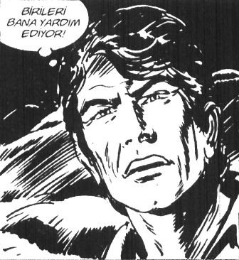

– Anne bak babama kahveden paket getirdiler.
– Ne paketi kızım?
– Her akşam kahveye gidiyor ya, onuncu yıl anısına demlik şeklinde plaket yaptırmışlardır. Pıh pıh pıhh.
– Baban gibi gülme Sîmin.
– Anne niye göbek adımı Sîmin koydunuz?
– Osmanlıcada “gümüş kadar saf, temiz” demek. Ben de senin hep temiz iyi kalpli olmanı istedim, göbek adını ben koydum.
– Peki adımı niye Nisan koydunuz?
– Onu, koyan Ağustos Böceğine sor! Kesin bilinçsizdir. Kahveden ne paket gelir ki? Aç bakalım şunu.
– Aaa, Şenay Teyzem yollamış. Kahveci Şahin İpek eliyle “Mordor Kıraathanesi”. Vaay Tolkien vaziyetleri, inanılmaz, yaa aşmış kahveci, böyle entelektüellik olur mu? Yüzüklerin Efendisi’ni okuyan kahveci duymamıştım hiç. Aaa bir de hikâye yollamış, fotokopiyle çoğaltmış, “Günün Hikâyesi” yazıyor. “Şahin’den, Şef Ağabeyime sevgilerle ve hörmetlerle” yazıyor.
– Allah Allah, bu kahveye geldiğine göre bizim görmemizi istemedi, aç bakalım.
– Anne küçük bir torba var. Aaçtıım. Eyvah yere döküldüler.
– Allah Allah, ne bunlar beyaz beyaz?
– Anne, teyzem pirinç yollamış.
– Niye bu kadar az?
– Sekiz tane var daha fazla mıydı acaba?
– Allah Allah, nedir bu pirinçler?
– Anne buldum, sakın okunmuş pirinç olmasın? O zaman 9 tane olmalı. Şenay Teyzem okunmuş pirinçlerle Remzi’yi mezun etmedi miydi? Şenay Teyzemle gizli gizli konuşuyorlardı ya!
– Ne yapacak ki okunmuş pirinci? Şef olmak için mi acaba?
– Yok anne, onun için 5 kiloluk baldo pirinç lazım.
– Niçin acaba?
– Anne haftaya KPDS var ya, çok çalıştı; ama bir de garantilemek için pirinç okutmuş.
– Ahh, canım benim...
– Ahh, canım babam...
– Anne sekiz tane var, hiç kaybettik mi acaba?
– Boş ver canım psikolojik bir şey, bir-iki tane eksik oluversin. Canım benim, ilkokul çocukları gibi pirinç yutuyor. Yanımda olsa yerdim onun yanaklarını.
– Anne senelerdir hiç babama böyle bir şey söylediğini duymadım.
– Sen yine de şu eksik pirinçlere bak bakalım...
GÜNÜN HİKÂYESİ
KİMİN İHTİYACI DAHA FAZLA
Tasavvuf dünyasının ünlü isimlerinden Cüneyd, kalabalık bir derviş grubuyla oturmuş, sohbet ediyordu. Onları tanıyan bir tüccar geldi, cebinden bir kese çıkardı, Cüneyd’e uzattı.
“Nedir bu?” diye sordu Cüneyd.
“İçinde 500 altın lira var, bunu cemaate dağıtasın diye sana veriyorum” dedi adam.
Cüneyd sordu: “Senin bu paradan başka paran var mı?”
“Tabii var” dedi adam, “Çok altınım var benim...”
Cüneyd yine sordu: “Peki sende olandan daha fazlasını ister misin?”
“Tabii isterim” dedi adam, “Neden istemeyeyim ki?”
Cüneyd keseyi geri uzattı:
“Bu parayı al, çünkü sen bizden daha muhtaçsın...”
Hırpalanmış, yaşlı bir avukattan canlı, genç bir Adonis’e dönüşümü, beslenme şeklinde basit bir değişiklik ve günde bir doz hızlı etki gösteren egzersiz programıyla olmamıştı. Hayır, bu Julian’ın o görkemli dağlarda keşfettiği çok güçlü bir şifaydı. O, insanların asırlardır aradığı bir sırrın yanıtına ulaşmıştı. Bu gençlik, doyum ve hatta mutluluk sırrından daha fazlasıydı. Julian kendini keşfetmişti.[20]
